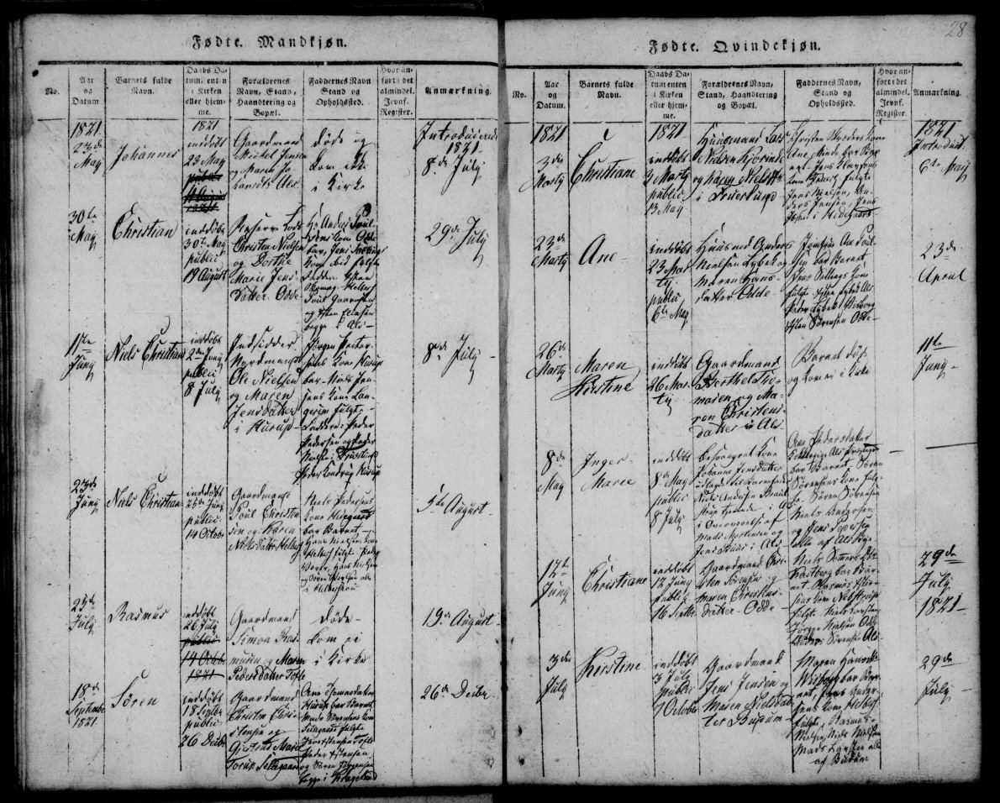
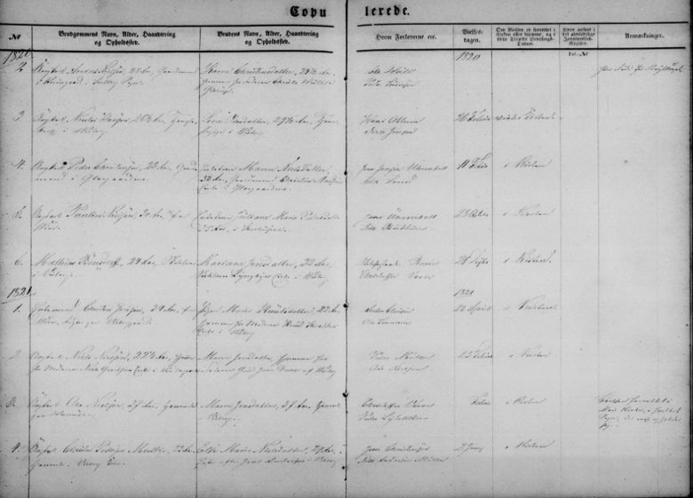

Chapter 1
An uncertain beginning
1821–1835
The times: Denmark after the Napoleonic Wars. Until 1814 Denmark and Norway were one kingdom, so a man like "Nordmand" Ole Nielsen could be born on one side of the Skagerrak and live on the other. The Treaty of Kiel of January 1814 handed Norway to Sweden. At home, the stavnsbånd, which from 1733 had bound peasant men to the estate where they were born, was lifted between 1788 and 1800. The duty to serve as a soldier passed to the state: every peasant boy was entered in the levying roll, and a young man could not leave his conscription district without permission (see chapter 2).1 From 1818 grain prices collapsed, at their lowest to between a third and a quarter of their 1818 level, and farming went through a decade of crisis.2 The School Acts of 1814 had just made schooling compulsory for the children of peasants and labourers.3 Confirmation, usually at 14 or 15, marked the end of childhood.4
Growing up poor in the countryside. For a child of the rural poor, work began early. Children herded geese and cattle from the age of six or seven, and many were sent to live and work in another family's household before they were ten. Country children went to school only every other day, and in practice mostly in winter, when there was less work. Confirmation at about fourteen ended both school and childhood, and the young then went out to earn their own keep as servants.5
Born at Hurup, 1821
Niels Christian was born on 1 June 1821 at Hurup, today Øster Hurup, a coastal hamlet in Als Sogn in Hindsted Herred, near the mouth of the Mariager Fjord. He was baptised at home the next day, 2 June, and presented in Als church on 8 July. The register names his parents as "Indsidder Nordmand Ole Nielsen og Maren Jensdatter i Hurup": the lodger Ole Nielsen the Norwegian, and Maren Jensdatter, of Hurup.6 The family tree puts his birth in Norway around 1784.7


His Parents' Marriage
His parents' marriage was brief and hard to pin down. The Visborg church book records a wedding in 1821 and notes it took place "in Mou Church, where they now reside". Mou's own book does not record it. Ole is called a farmhand at the wedding. A few months later, at the baptism, he is an indsidder, a lodger in someone else's household at Hurup.8
Lodger, servant or farmer? A Danish farm of this period housed people of very different standing:
- Farmer (gårdmand): held the farm, as owner or estate tenant, and headed the household.
- Smallholder (husmand): had a cottage of his own, owned or held from an estate, often with a little land, and earned most of his living as a day labourer on the farms. Many owed the estate a set number of workdays a year. Ulrikka's husband, Peter Nielsen, was a husmand.
- Lodger (indsidder): rented a room or part of a farmhouse and kept a separate household; lived by day labour or a poor craft. Lodgers were the poorest of the rural householders, though they had more independence than servants, who ranked below them. Until 1850 a farmer needed the estate's permission to take one in.
- Servant (tjenestekarl, tjenestepige): young, unmarried, hired by the year; lived in, ate at the farmer's table, and was paid mostly in board, clothing and shoes.
Niels Christian's father (1821) and Niels Christian himself (1855 and 1863) were both recorded as indsiddere. Sources: Lex.dk, "inderste"; Danish Wikipedia, "Indsidder"; Gyldendal og Politikens Danmarkshistorie, "Klasseskel på landet".


The entry calls the groom Ungkarl (bachelor) Ole Nielsen and describes both him and Maren Jensdatter as tjenende, in service. The note beside it reads "Vielsen forrettet i Mou Kirke, i hvilket Sogn de nu opholde sig": the wedding was performed in Mou church, the parish where they were then living.8 This is almost certainly the Visborg page the tree cites, since the Mou note matches. Both ages appear to read 37, which would put Ole's birth about 1784, as the tree has it. The places where each was in service, the two sponsors and the wedding date cannot be read with confidence in this copy. The date may be a ditto of the entry above, 23 February 1821, which would put the wedding about three months before the birth.
The Marriage Ends
The family tree dates the end of the marriage to 1824. That year a parish list of arrivals, probably Skelund's, enters "Maren Jensdatter, 40, Indsidderske", a lodger, arriving from Mou Sogn; the note beside her appears to name Christen Nielsen. Her son is not listed with her. By 1834 he was living in Skelund with the day labourer Christen Nielsen and his wife Karen Nielsdatter, a generation older than his parents: Christen was 63 and Karen 60.
Maren by then had a household of her own. On 25 September 1830, in Skelund church, she married Christian Frederich Christensen, a widower of 37 from Veddum in the same parish. The word the priest wrote for her status is hard to read. Compared with his other entries on the page, including a clear Enke efter, "widow of", in 1832, it is probably Enken, the widow. If so, Ole Nielsen had died before 1830, or Maren at least declared him dead. The banns were read in the ordinary way, and the entry mentions no death certificate, probate certificate or licence. The 1834 census finds them in Skelund: he a day labourer of 42, she 51, with his daughter Bodil Marie, aged 11. When and where Maren died is not yet known. The family tree gives 23 February 1879 at Rold, but that date belongs to a different, unmarried Maren Jensdatter (see Appendix E).9
Foster Parents and a Missing Father
In the 1834 census Niels Christian, aged 13, appears in Christen and Karen's household as their own son. The family tree says they had raised him since he was three.10 Ole Nielsen vanishes from the records. If Maren was truly a widow in 1830, he died between about 1824 and 1830, and his burial has not yet been found. One man of his name does appear later. On 22 March 1836 the death of an Ole Nielsen of Gravlev was reported to the Hornum-Fleskum district court. The court's register of deaths reads: "Fattiglem Ole Nielsen Damborg af Gravle er død. Intet efterladt" – "the pauper Ole Nielsen Damborg of Gravlev has died. Left nothing." A fattiglem was a pauper kept by the parish poor relief, and paupers were very often old or infirm, which makes it more likely that he was the Ole Nielsen Damborg born at Torsted in 1742 (see chapter 4). Because he bore the name Damborg, he has long been taken for Niels Christian's father. He can be, but only if Maren remarried while he was still alive, after a divorce, or after he had deserted her and she declared him dead. No record of either has yet been found.11
In 1835 Niels Christian was confirmed in Skelund Sogn, where he was living. The register enters him as Niels Christian Olesen, son of Ole Nielsen and Maren Jensdatter, born at Hurup on 1 June 1821, and gives his knowledge and his conduct each the mark g, for god (good). It also records that he had been vaccinated against smallpox on 28 June 1823, when he was two.12
Click here for notesHide notes12 notes
Abbreviation: DFT = Damborg family tree, "20130316 Damborg", Ancestry.com Member Trees, GEDCOM export of 26 May 2026, including its facts, research notes and attached images. Short titles refer to the Works Cited.
- 1“Treaty of Kiel,” Wikipedia (treaty of 14 January 1814 ceding Norway to Sweden; British bombardment of Copenhagen, 1807); “Danish state bankruptcy of 1813,” Wikipedia (bankruptcy declared 5 January 1813). On the stavnsbånd: "Stavnsbånd", Den Store Danske (lex.dk) (ordinance of 4 February 1733 binding peasant men aged 14–36 to their home estate; widened to 9–40 in 1742 and 4–40 in 1764; lifted by the ordinance of 20 June 1788, and for everyone only by 1800); "MYTE: Gjorde stavnsbåndets løsning i 1788 de danske bønder frie?", lex.dk (conscription became a personal duty under the county and a new sessions system; young men could not leave the district without permission); "Stavnsbånd", Wikipedia. ↩
- 2Klithede, “Modernisation, internationalisation and urbanisation” (crises caused by falling grain prices after 1814); “Landbrugskrisen 1818–28,” Snylterstaten.dk (prices fell to between one-third and one-quarter of 1818 levels). ↩
- 3Larsen, “The Danish School Acts of 1814 and the Emergence of Mass Schooling in Denmark” (the 1814 acts made school attendance compulsory for the children of peasants and labourers). ↩
- 4FamilySearch Research Wiki, “Danish Military Levying Rolls: When was a person registered in the Lægdsruller” (confirmation typically at ages 14–15). ↩
- 5Nationalmuseet, “Børn i arbejde og leg i 1700- og 1800-tallet” (work from age 6–7; goose girls and herd boys; school one day, work the next; a herd boy's recollection, “Vi børn var altid sultne”; service after confirmation); Danmarks Skolehistorie, “Børneliv i 1860–1870'erne” (rural school every other day; many children in service before ten and living with another family; confirmation at fourteen). The Skolehistorie article describes the 1860s–70s, but these patterns were long established. ↩
- 6Als Sogn church book, register of births (males), 1821, p. 28: Niels Christian, born 1 June, baptised at home 2 June, presented in church 8 July; parents "Indsidder Nordmand Ole Nielsen og Maren Jensdatter i Hurup" (Rigsarkivet, Arkivalieronline, epid 17121396; image supplied by the family); DFT, Niels Christian Olesen: birth and baptism, citing Denmark, Church Records, 1812–1918 (Kontraministerialbog ref. 8032910821). ↩
- 7DFT, Ole Nielsen: birth c. 1784, Norway; research notes “Relation to Norway?” and “Occupation” (entered as Nordmand Ole Nielsen in his son's birth register). On the end of the Denmark–Norway union in 1814, see “Treaty of Kiel,” Wikipedia. ↩
- 8DFT, family of Ole Nielsen and Maren Jensdatter: marriage 1821, Visborg Sogn, with the note on Mou and Hurup; Ole Nielsen, research note “Occupation” (farmhand at the marriage, indesidder at the baptism); Visborg marriage entry, Danish Family Search, opslag 13919845. Residence at Hurup: Als Sogn register of births, 1821, p. 28. Image of the marriage page (1820–21, entry no. 3 of 1821) supplied by the family, 29 September 2026. ↩a ↩b
- 9DFT, family of Ole Nielsen and Maren Jensdatter: separation 1824 and move to Skelund Sogn; list of arrivals (tilgangsliste) 1824, no. 103, p. 98, probably Skelund Sogn: "Maren Jensdatter, 40, Indsidderske", from Mou Sogn (Arkivalieronline, epid 21584266; image supplied by the family); Maren's marriage to Christian Frederich Christensen, 1830. Skelund Sogn church book, marriages 1830, no. 3, 25 September 1830: "Enkemand Christian Frederich Christensen 37 Aar … af Weddum" and "[Enken?] Maren Jensdatter af Skeelund" (the word for her status is hard to read; compare "Enke efter Anders …", marriages 1832, no. 1, on the facing page, in the same hand) (Ancestry, Denmark church books, collection 61607, image 48492_32021000952_0067-00085; found by the family, 1 October 2026). 1834 census, Skelund Sogn, Hindsted Herred (Christian Frederich Christensen, 42, day labourer; Maren Jensdatter, 51; Bodil Marie Christiansdatter, 11; image supplied by the family). The tree's death date for Maren, 23 February 1879, Rold, is that of the unmarried Maren Jensdatter born 1805 (Nørgaard, Tre Slægter fra Rold, p. 37, D2). ↩
- 101834 census, Skelund (Danish Family Search, cid 3036404); DFT, Niels Christian Olesen, event “Census 1834” and note. ↩
- 11Hornum-Fleskum herreders death register (dødsanmeldelsesprotokol), 1836, entry no. 50, reported 22 March 1836: "Fattiglem Ole Nielsen Damborg af Gravle er død. Intet efterladt" (images supplied by the family; date and occupation read from a clearer copy of the page, 1 October 2026; compare "Almisselem" in entries 47 and 53 on the same page). DFT, Ole Nielsen: death 24 March 1836, Gravlev (a date that cannot be right if the death was reported on 22 March); research note on the Gravlev burial entry. Nørgaard, Tre Slægter fra Rold, pp. 32–33 and lineage charts, pp. 113–115 (the Torsted line: Niels Pedersen Damborg, d. 1748; Ole Nielsen Damborg, b. Torsted 1742, m. Maren Nielsdatter, of Gravlev parish; Christen Nielsen Damborg, b. Gravlev 1775; Ole Christensen Damborg, Lille Rørbæk, 1854; Chr. Olsen Damborg, d. Fogedgaarden, Rold, 1882). Gravlev Sogn, Hornum Herred, church book, male burials, October 1835–May 1836 (no Ole Nielsen; checked by the family, 29 September 2026). On Maren Jensdatter's status at her remarriage in 1830: Skelund Sogn, marriages 1830, no. 3 (see the note on her remarriage in chapter 1). ↩
- 12Skelund Sogn church book, confirmations 1835, boys no. 3 (Niels Christian Olesen; parents Ole Nielsen and Maren Jensdatter; born Hurup 1 June 1821; knowledge and conduct "g"; vaccinated 28 June 1823), image supplied by the family; DFT, Niels Christian Olesen: confirmation 1835. On the age of confirmation, see FamilySearch Research Wiki, “Danish Military Levying Rolls: When was a person registered.” ↩